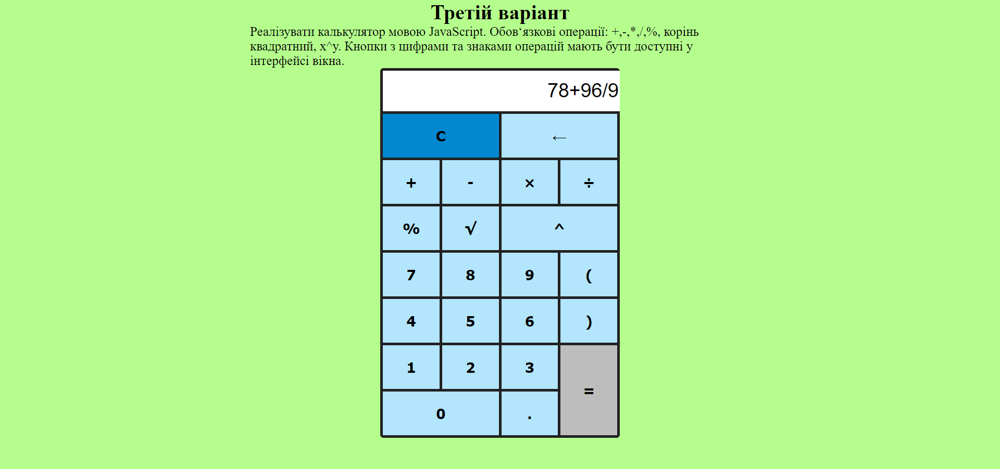
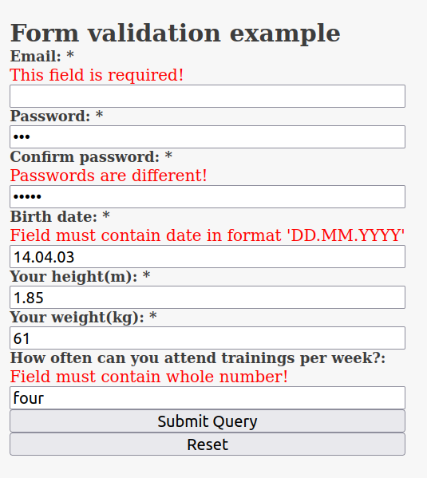

ВИКОНАТИ ІНДИВІДУАЛЬНЕ ЗАВДАННЯ З ПУНКТУ 6, ВИКОРИСТОВУЮЧИ СЦЕНАРІЙ НА JavaScript
Винник Віталій :
3 варіант
Назва завдання
Калькулятор
Завдання
Реалізувати калькулятор мовою JavaScript. Обов‘язкові операції: +,-,*,/,%, корінь квадратний, x^y. Кнопки з цифрами та знаками операцій мають бути доступні у інтерфейсі вікна.
Результат виконання :

Програмний код - HTML :
Програмний код - CSS :
Програмний код - JAVASCRIPT :
Зозулюк Віктор :
6 варіант
Назва завдання
Календар
Завдання
Реалізувати можливість вибору дати у елемент форми з спеціального візуального компоненту. Вимоги до компоненту: вибір числа, перехід між місяцями та роками, відміна вибору дати.
Результат виконання :

Програмний код - HTML :
Програмний код - CSS 1 :
Програмний код - CSS 2 :
Програмний код - JAVASCRIPT :
Кальченко Єгор :
7 варіант
Назва завдання
Гістограма
Завдання
Реалізувати можливість уведення довільної кількості чисел у елементи форми та побудови нормалізованої за максимальним числом гістограми значень цих полів. При візуалізації гістограми використовувати лише засоби CSS.
Результат виконання :

Програмний код - HTML :
Програмний код - JAVASCRIPT :
Лієнко Денис :
11 варіант
Назва завдання
Валідація HTML-форми реєстрації користувача
Завдання
Забезпечити перевірку елементів HTML-форми таких видів: ціле число, дійсне число, дата у форматі DD.MM.YYYY, однаковість даних у полях введення паролю (основне та перевірочне). Крім того, забезпечити перевірку введення обов‘язкових полів, помічених (*).
Результат виконання :

Програмний код - HTML :
Програмний код - CSS :
Програмний код - JAVASCRIPT :
|